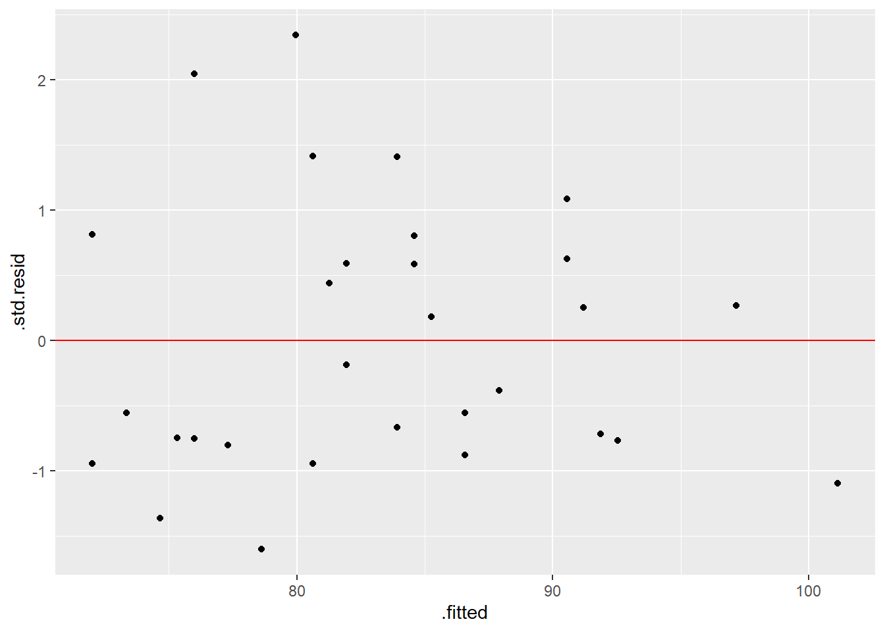

The core purpose of R is to provide a programming framework for statistical modelling. Perhaps for this reason, the basics of statistical modelling have not been touched by the tidyverse. As we shall see, however, the modelr and broom packages can help us better-process model output.
11.1 A Simple Linear Model
All forms of model follow a similar specification in R so let’s start with the simplest, the linear model. This can be fitted using the lm function. To demonstrate how lm works we first merge/join the demography and vitals data frame together to create a population dataset.
pop <-inner_join(dm, vs, by ="USUBJID")pop
# A tibble: 30 × 9
USUBJID AGE SEX COUNTRY RACE ETHNIC ARM HEIGHT WEIGHT
<chr> <dbl> <chr> <chr> <chr> <chr> <chr> <dbl> <dbl>
1 STD123456:000001 32 F UK BLACK OR AFR… NOT H… Comp… 165 88
2 STD123456:000002 28 M FRA WHITE NOT H… Comp… 179 100
3 STD123456:000003 55 M USA BLACK OR AFR… NOT H… Comp… 182 81
4 STD123456:000004 35 F GER WHITE HISPA… Comp… 166 91
5 STD123456:000005 30 F IRE WHITE NOT H… Comp… 169 73.6
6 STD123456:000006 22 F GER WHITE NOT H… Comp… 164 66
7 STD123456:000007 59 F USA WHITE NOT H… Comp… 157 107
8 STD123456:000008 53 M GER WHITE NOT H… GSK 189 101
9 STD123456:000009 60 F USA WHITE NOT H… GSK 155 54.1
10 STD123456:000010 48 M USA WHITE NOT H… Comp… 171 88
# ℹ 20 more rows
Now let’s model weight as a function of height. In order to do so we call the lm function and provide two arguments: the data and the model formula. The model formula is specified using a tilde, ~. The dependent variable is placed to the left of the tilde and any independent (explanatory) variables are placed to the right. In the example below we save the model output with a name. We must do so if we wish to use the results, for example to create plots of the residuals.
# Fit the modelpop_lm <-lm(WEIGHT ~ HEIGHT, data = pop)# The default "print" for the modelpop_lm
The example above fits a model of the form, WEIGHT = intercept + alpha*HEIGHT, where the intercept and alpha parameters are estimated by the model.
11.1.1 Adding Terms
If we have more than one explanatory variable we use a plus, +, to add in the additional terms.
# Fit the modelpop_lm2 <-lm(WEIGHT ~ HEIGHT + AGE, data = pop)pop_lm2
Call:
lm(formula = WEIGHT ~ HEIGHT + AGE, data = pop)
Coefficients:
(Intercept) HEIGHT AGE
-47.5819 0.6798 0.3302
11.1.2 Categorical Variables
When modelling, R uses the data type to determine which variables are numeric and which are discrete / categorical. This means that we need to ensure that the data are of the right type before fitting in the model. If we have categorical data stored as numeric then we can use the factor function to convert it to categorical.
When fitting categorical variables, the first level of the factor is set as the base and all other levels are compared against this level. In order to change the order (and hence the base level) we can use a forcats function such as fct_relevel, which moves any given levels to the start of the queue. For readability it is generally advisable to do this in the data, as opposed to within the modelling step.
#library(forcats)# Compare all countries against the US so change the order of levels in the datapop <- pop %>%# Move USA to the frontmutate(COUNTRY =fct_relevel(COUNTRY, "USA"))# To see what has happened: pop%>%pull(COUNTRY)
[1] UK FRA USA GER IRE GER USA GER USA USA USA FRA IRE USA FRA USA FRA IRE USA
[20] FRA GER GER IRE FRA USA FRA IRE IRE UK USA
Levels: USA FRA GER IRE UK
# Fit the model - we now have a coefficient for all countries except USApop_lm3 <-lm(WEIGHT ~ HEIGHT + AGE + COUNTRY , data = pop)pop_lm3
Call:
lm(formula = WEIGHT ~ HEIGHT + AGE + COUNTRY, data = pop)
Coefficients:
(Intercept) HEIGHT AGE COUNTRYFRA COUNTRYGER COUNTRYIRE
-61.4822 0.6999 0.4014 14.9240 3.7707 8.4995
COUNTRYUK
16.8185
11.1.3 Interaction Terms
We can fit interaction terms using a colon, :. If we also want to include the base terms that make up the interaction term we can instead use the shorthand, *.
pop_lm_int <-lm(WEIGHT ~ HEIGHT + AGE + HEIGHT:AGE, data = pop)# Or equivalentlypop_lm_int <-lm(WEIGHT ~ HEIGHT*AGE, data = pop)pop_lm_int
Call:
lm(formula = WEIGHT ~ HEIGHT * AGE, data = pop)
Coefficients:
(Intercept) HEIGHT AGE HEIGHT:AGE
-291.6603 2.1181 4.8607 -0.0267
11.1.4 Where the tidyverse Fits in
Everything we’ve seen thus far is available “out of the box”. Most of what we’re about to see is implemented via two tidyverse packages, modelr and broom. The modelr package is one that allows us to more easily extract additional information from the model such as the Root Mean Square Error. The package also contains a number of useful utilities for resampling/bootstrapping and for implementing k-fold cross validation. Sadly, we don’t have the time to cover these features on this course. The broom package provides a set of helpful utilities for turning the standard R model output into data frames. SAS users might compare the functionality to that of SAS’ “ODS” feature.
In the following sections we use a combination of functions that are part of the base, stats, modelr and broom packages. It’s generally not worth worrying about what function is contained in what package so the easiest thing to do is to load modelr and broom each time you begin modelling (base and stats are always loaded when you start R in interactive mode). Both packages are installed as part of the tidyverse but not automatically loaded so we must do so manually.
# Load the packageslibrary(modelr)library(broom)
11.1.5 Checking the Model Fit
Once we have fitted our model and saved it as an R object there are a number of different ways with which we can extract information. First of all the glance function produces a data frame where each column is a different model fit statistic.
As well as looking at the fit we can check the model fit using the augment function. The augment function appends useful information such as the residuals and fitted values as columns to the original data.
If we give the augmented data a name, we can use it to graphically check our model assumptions. We would need to load {ggplot2} to create the plot, if it were not already loaded.
# Augment our data and save itpop_data_modelled <-augment(pop_lm)# Create a plot of the studentised residuals against fitted valueslibrary(ggplot2)ggplot(pop_data_modelled) +geom_point(aes(x = .fitted, y = .std.resid)) +geom_hline(yintercept=0, colour ="red")

11.1.7 Extracting the Coefficients
In order to extract the coefficients for each of the parameters, along with the respective standard errors and p-values we can use the tidy function from the broom package. We simply provide the tidy function with the name of our model object and the function outputs a data frame containing the information we need.
Fit a linear model of the Change from Baseline (ACTCHGBL) in ACT Total Score by treatment (ARM), age (AGE) and visit (VISITNUM) using the act_full data (exclude screening, baseline and early withdrawal data before fitting the model). HINT: these visits have VISITNUM values: of 10, 20 and 70.
Asses your model fit by plotting the studentised residuals against the fitted values. HINT: use the following template ggplot(NAME_OF_DATA) + geom_point(aes(x = NAME_OF_X_VARIABLE, y = NAME_OF_Y_VARIABLE))
Programmatically find any significant (< 0.05) coefficients
11.3 Other Types of Model
Now that we have a basic understanding of a model object and how we can extract useful information from it, let’s look at some of the other types of model that we might wish to fit in R.
11.3.1 Generalised Linear Models
In order to fit generalised linear models we replace the lm function with the glm function. By default the glm function fits a generalised linear model using the normal (gaussian) family and so it is equivalent to lm. We can fit other distributions be changing the family argument to another distribution such as Poisson of binomial.
# Model response using week 24 dataw24 <- act_full %>%filter(VISITNUM ==60)act_resp_mod <-glm(data = w24, ACTRESP ~ ARM + AGE , family ="binomial")tidy(act_resp_mod)
Historically, it has been relatively tricky to use R to fit the kind of MMRM models that we typically use in Pharma. A combination of packages could be used to achieve the desired results but subject matter expertise in both R and MMRM modelling was required! In 2022 the {mmrm} package was released. This package was built by Statisticians from within the pharmaceutical industry with copyright shared between several leading pharmaceutical companies (see https://openpharma.github.io/mmrm/latest-tag/).
The {mmrm} package provides a namesake mmrm function that simplifies the MMRM model fit. Model information can be extracted using {broom} in exactly the same way as we have seen for linear models and generalised linear models.
library(mmrm)# Model to be fitted to scheduled post-BL 'change from BL' dataact_post_bl <- act_full %>%filter(20< VISITNUM, VISITNUM <70) %>%# Visit must be a factor, not character. # VISIT 3 will be baseline for comparisons as first factor levelmutate(visit_factor =factor(VISIT)) # careful of levels in general case!# Fit unstructured covariance model which assumes:# REML: `reml = TRUE`# Satterthwaite DoF: `control = mmrm_control()`mmrm_mod <-mmrm(data = act_post_bl, ACTCHGBL ~ ARM + visit_factor +us(visit_factor | USUBJID))tidy(mmrm_mod)
Changing standard options is remarkably easy with the {mmrm} package. For example switching between REML and ML estimation, or making a Kenward-Roger adjustment to degrees of freedom.
The package can be combined with the popular {emmeans} package in order to extract estimated marginal means (AKA “least-square means”).
library(emmeans)
mmrm() registered as emmeans extension
Welcome to emmeans.
Caution: You lose important information if you filter this package's results.
See '? untidy'
# Pass the emmeans function the model object and the respective marginal means# In this case treatment by week (arm by visit)lsmeans_by_visit <-emmeans(mmrm_mod_kw, ~ ARM | visit_factor)# Equivalently:#lsmeans_by_visit <- emmeans(mmrm_mod_kw, "ARM", by= "visit_factor")# Pretty much equivalently (the attribute difference is beyond course scope)#lsmeans_by_visit <- lsmeans(mmrm_mod_kw, "ARM", by= "visit_factor")lsmeans_by_visit
In order to model survival data we load the survival package. Although we must load the package each time we wish to use it, it is actually installed as part of the base distribution of R. Survival modelling follows a similar pattern to what we have seen already. The only difference is that instead of a single dependent variable we use the Surv function to combine a time variable and a censoring variable.
Here is an example of fitting a Cox Proportional Hazards model using the in-built lung data.
library(survival)# Some example data from the survival package:head(lung) #see help('lung') for further information about the dataset